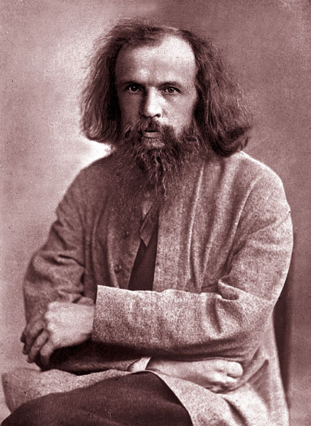

Dmitri Mendeléyev fue un químico, físico, profesor y economista ruso nacido en Tobolsk el 8 de febrero de 1834 y murió en San Petersburgo el 2 de febrero de 1907, viviendo un total de 73 años. Sus padres se llaman Iván Pávlovich Mendeléyev y María Dmítrievna Mendeléyeva, y según algunas fuentes era el menor de almenos 17 hermanos. En 1849, Maria tomó a Dmitri a través de Rusia hasta Moscú para intentar inscribirle en la Universidad de Moscú, pero le rechazaron, aunque luego se marcharon hasta San Petersburgo, y logró entrar en la Universidad Estatal de San Petersburgo un año después, en 1850. Después de graduarse, en 1855, contrajo tuberculosis, y se mudó a Crimea, aunque 2 años después volvió a San Petersburgo sano. En el 4 de abril de 1862, Mendeléyev, se prometió a una mujer llamada Feozva Nikitichna Leshcheva, y estos celebraron su boda el día 27 del mismo mes, durando su matrimonio 20 años (hasta 1882), teniendo dos hijos en el proceso: Vladimir y Olga. El principal causante de su divorcio fue el hecho de que, en 1876, Mendeléyev se obsesionó con otra mujer llamada Anna Ivanova Popova, y llegó a decirle que si ella no se casaba con él, que entonces él se suicidaría. Esto hizo que su esposa lo divorciara, y un mes después, se casó con Anna, el 2 de abril. Nuncá llegó a divorciarse de ella, y tuvieron tres hijos: uno llamado Iván, y gemelos cuyos nombres desconozco. En 1890, decidió retirarse de su trabajo como profesor en la Universidad de San Petersburgo, en 1892 se volvió miembro de la Royal Society, y un año después lo nombraron director de la Oficina de Pesas y Medidas del Imperio Ruso, puesto que ocupó hasta su muerte. |
|  |
Lista de sus investigaciones |
||
| Año | Investigación/Descubrimiento | |
| 1857 | Química Orgánica | |
| 1865 | Discurso sobre los compuestos del alcohol y del agua | |
| 1869 | Tabla periódica de los elementos | |
| 1892 | Pirocolodión | |
Aquí tienes un vídeo sobre Mendeléyev
Nota: El vídeo está cortado debido a que al descargarlo se ha perdido gran parte de su contenido